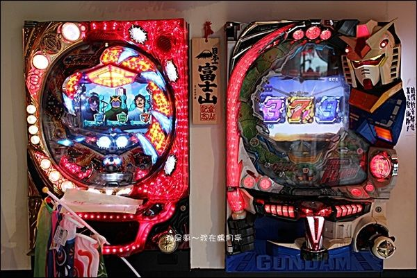

<thml>
<head>
<title>第四頁</title>
</head>
<body>
鶴月亭的低消是每人一杯飲料或酒水，軟性飲料蠻平價的。<br>
 先送上章魚燒的原料之一章魚腳，個頭好大喔！<p>
看服務生熟練的倒入麵糊，依序放入材料，接下來就是要等得囉！章魚燒最耗時<p>
所以一開始就要先製作，等吃完其它餐點，章魚燒也差不多好了。<br>



<a href="index.html">連到第一頁</a>
<a href="2hd.html">連到第二頁</a>
<a href="3hd.html">連到第三頁</a>
<a href="5hd.html">連到第五頁</a>

</body>
</thml>
